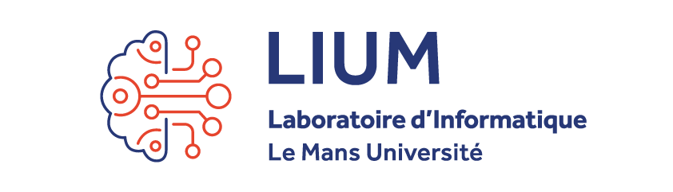
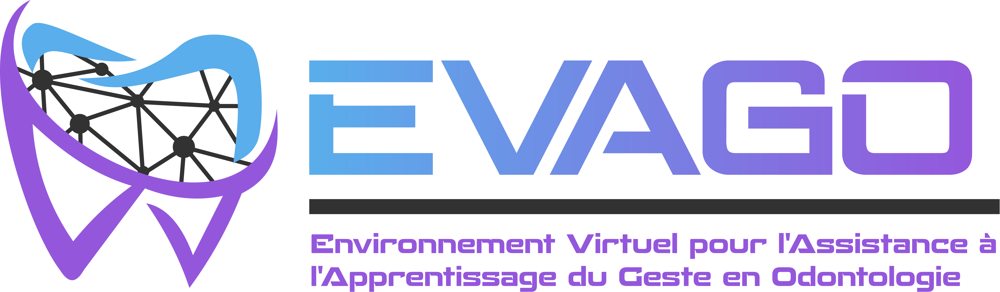

Contexte

Mes travaux portent sur la conception et la mise en place de modèles et d’outils pour l’analyse et l’évaluation automatique du geste technique, en réponse aux besoins d’observation (BO) des experts, dans le contexte de l’assistance à l’apprentissage du geste de chirurgie dentaire en formation préclinique.
Mes questions de recherche portent sur l’adaptabilité du moteur d’évaluation automatique à l’évolution des BOs exprimés par les experts, ainsi que sur l’intégration ouverte de multiples expertises motrices, chaque enseignant étant consulté individuellement et libre de proposer ses propres BOs.
Contribution
Parmi les contributions, j’ai développé VEEGO (Virtual Environment for the Evaluation of Gestures in Odontology), un environnement virtuel dédié à l’évaluation automatique des gestes en odontologie. VEEGO permet de capter les mouvements, de les rejouer à travers des avatars 3D, d’identifier automatiquement des défauts gestuels et posturaux à partir de démonstrations d’experts utilisées pour entraîner des modèles d’apprentissage automatique via son interface, puis de fournir aux apprenants un retour visuel et textuel en temps réel sur les aspects à corriger.
Acquérir et rejouer les mouvements
- Streaming des données de mouvement.
- Enregistrement et relecture sur des avatars 3D.
- Plusieurs systèmes de capture : Qualisys, Perception Neuron et Azure Kinect.
Entraîner des modèles via VEEGO
- Segmentation et étiquetage des démonstrations d’experts.
- Calcul de descripteurs de mouvement.
- Entraînement d’un modèle d’apprentissage automatique par besoin d’observation.
Identifier les défauts gestuels et posturaux
- Détection automatique des défauts en temps réel.
- Retours visuels par coloration d’un avatar 3D et indications textuelles.
- Bilan final de la fréquence d’apparition des défauts sur la durée de l’enregistrement.
- Comparaison du geste de l’apprenant à une démonstration d’enseignant.
VEEGO a été validé avec des experts et expérimenté auprès de plus de 60 étudiants de l’UFR d’odontologie de Nantes, en France.
Les étudiants ont jugé les retours de VEEGO utiles pour apprendre les gestes et les postures :
- Tout à fait d’accord
- 74,2 %
- D’accord
- 24,2 %
- Pas d’accord
- 1,5 %
Quelques retours d’étudiants
« J'ai bien aimé l'expérience et je prendrai en compte ce qu'il m'a été dit dans mes futurs TP. Merci ! »
« Je trouve que le logiciel ma permit de rectifier beaucoup d erreur dans mon ergonomie, notamment dans mon placement autour du fantome, le fait de rester sur le cadran droit pour ne pas gener mon assistant. Le fait de mettre en evidence les erreurs permet de me rectifier toute suite apres et de ne pas continuer. »
« Devrait-être pour tous les étudiants, très pédagogique, et formateur»
Projet EVAGO

Ces travaux s’inscrivent dans le cadre du projet EVAGO ↗, au sein duquel j’ai travaillé en collaboration avec des experts en odontologie du RMeS, des chercheurs en sciences de l’éducation du CREN, ainsi que le partenaire industriel HRV. Le projet est financé par l’ANR dans le cadre d’un PRCE (ANR-21-CE38-0010 ↗).
J’ai principalement contribué au WP3, piloté par le LIUM, qui visait à proposer des modèles et des prototypes pour représenter et évaluer l’activité selon les besoins des experts. J’ai également participé à d’autres WP du projet.
Manifestations scientifiques récentes
- 2026
CSEDU26
Présentation orale · 18–20 mai 2026 · Benidorm, Espagne.
- 2026
Journées du geste technique ↗
Présentation poster et vidéo · 5–6 février 2026 · Laval, France.
- 2025
Journées GTRV
Présentation orale · 4 juillet 2025 · Lyon, France.
- 2024
Journées IHM–IG–RV
Présentation orale · 30–31 mai 2024 · Lille, France.
- 2024
CSEDU24
Présentation orale · 2–4 mai 2024 · Angers, France.
- 2024
10es Rencontres des jeunes chercheur·e·s en EIAH
Présentation poster et membre du comité d’organisation · Laval, France.
- 2024
JDOC2024 · École doctorale MASTIC
Présentation poster à la Journée des doctorant·e·s · Nantes, France.
- 2024
Doctoriales Laval Virtual
Présentation poster · Laval, France.
- 2023
AUPTIC éducation · 7e colloque international
Contribution à une présentation du projet pluri- et transdisciplinaire EVAGO · Novembre 2023 · Caen, France.
Publications
- 2026
Virtual Environment for the Evaluation of Gestures in Odontology
M. N. Hefied, L. Hamon, S. George · CSEDU, 18ᵉ édition, vol. 2, p. 1388–1400.
- 2024
A Pipeline for the Automatic Evaluation of Dental Surgery Gestures in Preclinical Training from Captured Motions
M. N. Hefied, L. Hamon, S. George, V. Loison, F. Pirolli, S. Lopez, R. Crétin-Pirolli · CSEDU, p. 420–427.
- 2024
Pipeline initial pour l’évaluation automatique du geste en odontologie
M. N. Hefied · Rencontres jeunes chercheuses et chercheurs en EIAH, p. 218–222.
- 2023
Projet de recherche EVAGO — Un travail pluri et transdisciplinaire présenté par ses doctorants
V. Loison, O. N. Bandiaky, V. Agueda, M. N. Hefied · AUPTIC éducation, 7ᵉ colloque international.